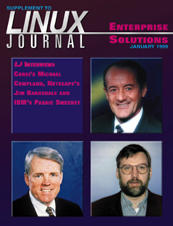

Shutdown Archive web server
Search:

Enterprise Solutions Supplement
Features
LJ
Interviews Corel's Michael Cowpland
by Marjorie Richardson
A talk with the President of Corel, a man and a company fully comitted to Linux.
LJ
Interviews Netscape's Jim Barksdale
by Marjorie Richardson
Netscape's CEO talks about Open Source and Linux and why his company supports both.
LJ
Interviews IBM WebSphere's Paraic Sweeney
by Marjorie Richardson
IBM now supports Open Source by shipping products with the Apache web server.
News & Articles
Linux as POS for Pizza Business
by Steve O'Connor
Here's a new use for Linux—selling pizzas—and about time, too.
Linux-Kontor Accountancy Package
by Joachim Schaaf
Mr. Schaaf describes the concept and current development stage of this free program for the commodity market.
Product Review
xxl: A Spreadsheet for Linux
by Larry Ayers
The intent of xxl is to produce a graphical spreadsheet which is both uncomplicated and easy to learn and use.
Departments
From the Editor
Linux and Enterprise: A Winning Combination
by Marjorie Richardson
Archive Index
Issue Table of Contents
Shutdown Archive web server
Search:
Copyright © 1994 - 2018
Linux Journal
. All rights reserved.